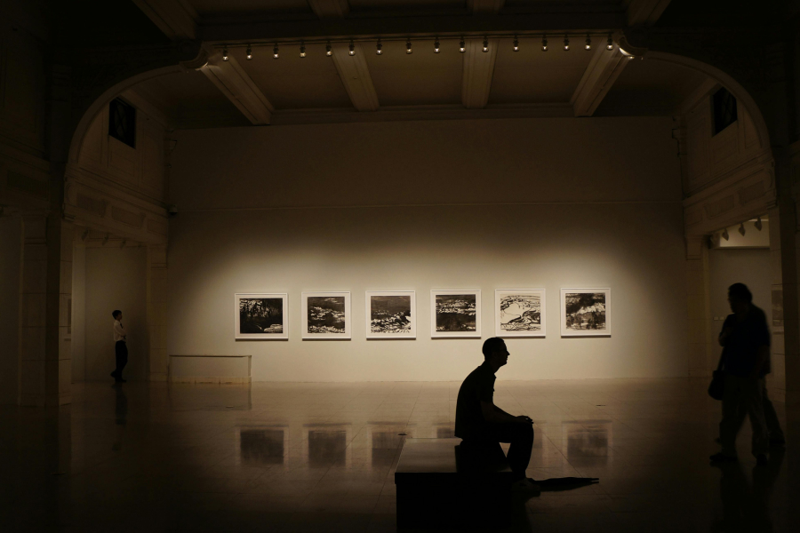

「納涼ナイトミュージアム2025」

昨年度に引き続き、 夏季期間に千葉県佐倉市の3つの文化施設が合同で「納涼ナイトミュージアム」を開催します。
千葉かくう美術館は、2025年8月1日(金)～9月26日(金)の期間中の金曜日の開館時間を21時まで延長します。
また「納涼ナイトミュージアム」の開催日に限り、17時以降のご来館で展覧会の観覧料が割引または無料となります
さらに期間中にはイベント「縁日ワークショップ」を開催します。普段は味わえない夜の美術館で、ゆっくりお過ごしください。
開催概要
- イベント名
- 「納涼ナイトミュージアム 2025」
- 実施日
- 8月1日、8月8日、8月15日、22日、29日、9月5日、12日、19日、26日
- 開館時間
- 10:00～21:00（展示室の最終入場は20:30まで）
- 観覧料割引（17時以降）
- 学生無料、一般・65歳以上は2割引（要証明）
- 関連イベント
- 縁日ワークショップ